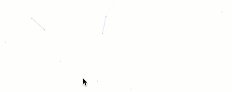
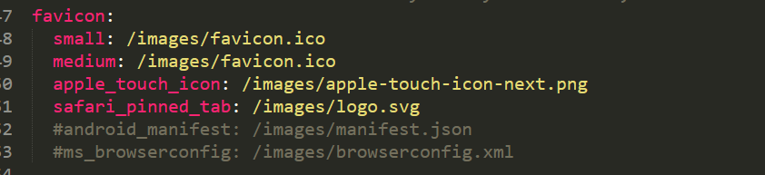
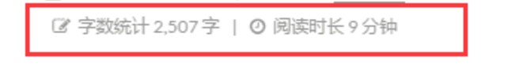
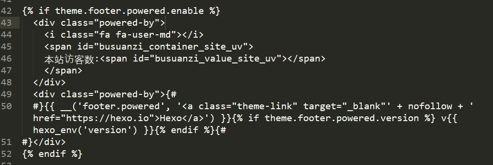
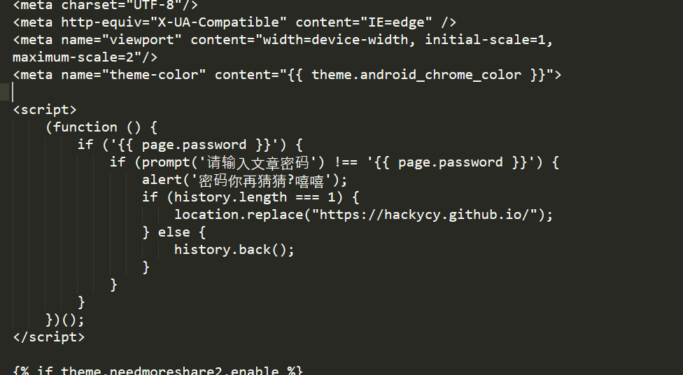
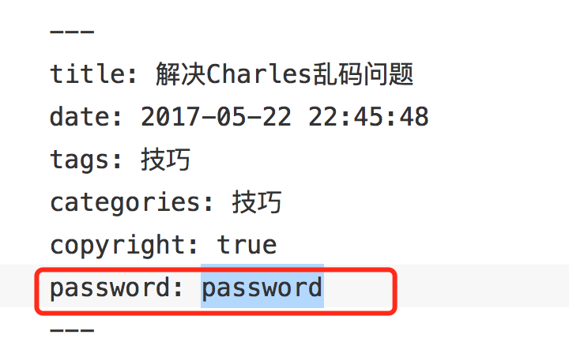
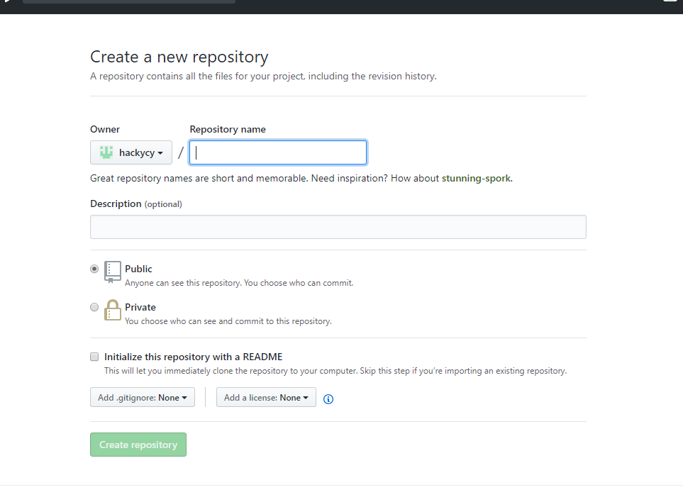
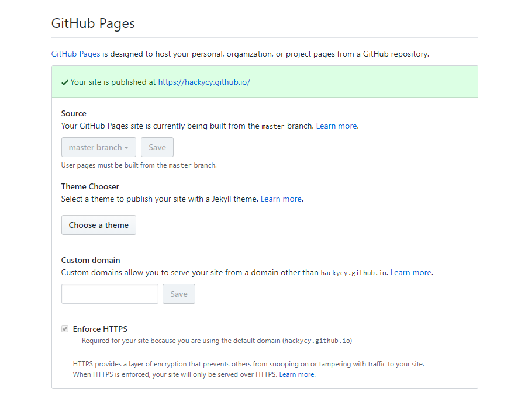

我的历史上第一篇教程，Hexo+github搭建个人博客。虽然网上有很多，但是想从这一篇开始我的写作之路。
一些前戏
搭建此博客时，百度了很多资料，但是上手还是从官方资料开始上手
这是官方链接
Hexo
Next主题
图标库
开始使用
前提
Hexo博客的前提需要在本地先安装nodejs与git
推荐一下使用淘宝NPM，本人是windows环境下搭建，建议用git-bash
部署
安装Hexo 1
$ npm install -g hexo-cli
搭建
安装Hexo完成后，请执行以下命令，hexo会在指定文件夹中创建文件1
2
3
4$ cd e:/
$ hexo init <folder>
$ cd <folder>
$ npm install
新建完成后会生成hexo所需要的一些文件
_config.yml
网站的一些主要配置信息都在这文件下进行配置
详细参数可点击链接进行查看
config
Hexo命令
init
1 | $ hexo init [folder] |
新建一个网站。如果没有设置 folder ，Hexo 默认在目前的文件夹建立网站
new
1 | $ hexo new [post|draft|page] <title> |
新建一篇文章。如果没有设置 layout 的话，默认使用 _config.yml 中的 default_layout 参数代替。如果标题包含空格的话，请使用引号括起来。
generate
1 | $ hexo g |
生成静态文件。
server
1 | $ hexo s |
启动服务器。默认情况下，访问网址为： http://localhost:4000/。
deploy
1 | $ hexo d |
部署网站。
clean
1 | $ hexo clean |
清除缓存文件 (db.json) 和已生成的静态文件 (public)。
Hexo美化
主题安装
这里安装的是比较热门的Next主题
里面也有中文文档，安装说明都很详细，具体安装不在本教程说明,但是具体说明主题中的 _config.yml 文件和站点中的 _config.yml 文件配置是有区别之分的，请详细查看清楚具体是配置哪个配置文件。
启用主题
修改站点配置文件 _config.yml 1
2
3
4# Extensions
## Plugins: https://hexo.io/plugins/
## Themes: https://hexo.io/themes/
theme: next
主题设定
选择 Scheme
Scheme 是 NexT 提供的一种特性，借助于 Scheme，NexT 为你提供多种不同的外观。同时，几乎所有的配置都可以 在 Scheme 之间共用。目前 NexT 支持三种 Scheme，他们是：
- Muse - 默认 Scheme，这是 NexT 最初的版本，黑白主调，大量留白
- Mist - Muse 的紧凑版本，整洁有序的单栏外观
- Pisces - 双栏 Scheme，小家碧玉似的清新
- Gemini - 左侧网站信息及目录，块+片段结构布局
Scheme 的切换通过更改 主题配置文件，搜索 scheme 关键字。 你会看到有四行 scheme 的配置，将你需用启用的 scheme 前面注释 # 去除即可。
动态背景

目前NexT主题最新的是V6.0版本，这个版本中可以有4种动态背景：
- Canvas-nest
- three_waves
- canvas_lines
- canvas_sphere
在 _config.yml 文件中即可配置，但是需要下载配置
栗子
点击出现桃心效果
浏览器输入：http://7u2ss1.com1.z0.glb.clouddn.com/love.js
拷贝所有代码，在/themes/next/source/js/src里面新建love.js，然后在\themes\next\layout_layout.swig文件末尾添加以下代码：
1 | <!-- 页面点击小红心 --> |
设置网站图标
默认的网站图标是一个N，当然是需要制定一个图了，在网上找到图后，将其放在 /themes/next/source/images 里面,找到主题配置文件中的favicon关键字，进行替换,如图

实现统计功能
实现效果图

具体实现方法
在博客根目录下,git-bash1
$ npm install hexo-wordcount --save
然后在主题的配置文件中，配置如下：1
2
3# Post wordcount display settings
# Dependencies: https://github.com/willin/hexo-wordcount
word_count: true
修改主题 swig 布局
为了能在文章信息处显示字数，我们需要修改 themes/next/layout/_macro/post.swig ，在 class 为 post-meta 的 div 中的添加如下内容：1
2
3
4
5
6
7
8
9
10{% if theme.word_count %}
<span class="post-letters-count">
|
<i class="fa fa-align-right"></i>
<span>字数统计:{{ wordcount(post.content) }}字</span>
|
<i class="fa fa-align-left"></i>
<span>阅读时长:{{ min2read(post.content) }}分</span>
</span>
{% endif %}
修改文章内链接文本样式
修改文件 themes\next\source\css_common\components\post\post.styl ，在末尾添加如下css样式，：1
2
3
4
5
6
7
8
9
10
11// 文章内链接文本样式
.post-body p a{
color: #0593d3;
border-bottom: none;
border-bottom: 1px solid #0593d3;
&:hover {
color: #fc6423;
border-bottom: none;
border-bottom: 1px solid #fc6423;
}
}
其中选择 .post-body 是为了不影响标题，选择 p 是为了不影响首页“阅读全文”的显示样式,颜色可以自己定义。
添加背景
在 theme/next/source/css/_custom 文件夹下打开 custom.styl 文件，往里面添加以下代码：1
2
3
4
5
6
7body{
background:url(图片链接);
background-size:cover;
background-repeat:no-repeat;
background-attachment:fixed;
background-position:center;
}
本地图片将图片放至主题目录下 source\images
修改文章底部的那个带#号的标签
具体实现方法
修改模板 /themes/next/layout/_macro/post.swig ，搜索 rel=”tag”># ，将 # 换成
在网站底部加上访问量
具体实现方法
打开 \themes\next\layout_partials\footer.swig 文件,在 copyright 前加上画红线这句话：1
<script async src="https://dn-lbstatics.qbox.me/busuanzi/2.3/busuanzi.pure.mini.js"></script>
然后再合适的位置添加显示统计的代码，如图：
1
2
3
4
5
6
7<div class="powered-by">
<i class="fa fa-user-md"></i>
<span id="busuanzi_container_site_uv">
本站访客数:<span id="busuanzi_value_site_uv"></span>
</span>
 | 
</div>
在这里有两中不同计算方式的统计代码：
pv的方式，单个用户连续点击n篇文章，记录n次访问量
1
2
3<span id="busuanzi_container_site_pv">
本站总访问量<span id="busuanzi_value_site_pv"></span>次
</span>uv的方式，单个用户连续点击n篇文章，只记录1次访客数
1
2
3<span id="busuanzi_container_site_uv">
本站总访问量<span id="busuanzi_value_site_uv"></span>次
</span>
文章加密访问
打开 themes\next\layout_partials\head 文件,在以下位置插入这样一段代码：
1
2
3
4
5
6
7
8
9
10
11
12
13
14<script>
(function () {
if ('{{ page.password }}') {
if (prompt('请输入文章密码') !== '{{ page.password }}') {
alert('密码错误！');
if (history.length === 1) {
location.replace("http://xxxxxxx.xxx"); // 这里替换成你的首页
} else {
history.back();
}
}
}
})();
</script>
然后在文章上写成类似这样：

就ok啦，不过很容易被破解掉噢
当然还有另一种方式
guide1
guide2
按照指引就可以啦~
部署
首先需要进行创建您个人的github账户
- 创建公钥
打开git-bash,执行1
ssh-keygen -t rsa -C "your_email@youremail.com"
github官方命令 链接
- 直接按三次回车，可不用输入密码，然后打开C盘查找Users/当前用户目录(Administrator),找到.ssh文件夹，打开文件夹下的id_rsa.pub文件，可用记事本文件打开将里面文字全部复制
- 打开github个人主页 (https://github.com/settings/ssh) ,点击 Add SSH Key 按钮，粘贴进去保存即可
安装 hexo-deployer-git。
1
$ npm install hexo-deployer-git --save
创建github仓库

仓库名中填写<github的用户名>.github.io- 修改 _config.yml 文件
1
2
3
4
5deploy:
type: git
repo: <repository url>
branch: [branch]
message: [message]
repository url使用ssh url即可，message不填也可
branch用master分支即可
- 执行
1
$ hexo d
或者1
$ hexo g -d
- 进入博客的github所在仓库，进入仓库设置,查看GitHub Pages

即可完成部署
基本操作
这里只提到一些编写过程中遇到的问题
插入图片
这里涉及到资源文件夹
绝对路径
当Hexo项目中只用到少量图片时，可以将图片统一放在 source/images 文件夹中，通过markdown语法访问它们。1

相对路径
图片除了可以放在统一的 source/images 文件夹中，还可以放在文章自己的目录中。文章的目录可以通过配置 config.yml 来生成。1
post_asset_folder: true
把 _config.yml 中配置post_asset_folder设置为true后，通过命令hexo new <文章名字>，hexo就会在文章的目录下建立一个和文章同名的文件夹，然后把图片资源放进该文件夹下，即可通过1

记住和第一点绝对路径有区别，别在路径前面加/，否则会出错
文档格式
假设我们的文章名为 “hello hexo markdwon”，在命令行键入以下命令即可：
1 | --- |
这些内容是干嘛的呢？事实上，他们就是用于设置 MarkDown 文档在被解析为静态网页文件时的相关配置，这些配置参数一般位于文件中最上方以 — 分隔的区域。
其中，title 的值是当前文档名，也是将来在网页中显示的文章标题。
date 值是我们新建文档时的当地时区时间。
tags 值是文档的标签，我们可以随意赋值为文档贴标签。其用法如下：1
2
3
4
5
6
7
8---
title: hello hexo markdown
date: 2016-11-16 18:11:25
tags:
- hello
- hexo
- markdown
---
文章分类
categories 是用来给文章分类的，它跟 tags 不同的是其具有顺序性和层次性。
categories 的用法同 tags 一样，只不过斗个 categories 值是分先后顺序的。1
2categories:
- hexo
文章摘要
有的时候，主题模板配置的不够好的话，Hexo 最终生成的静态站点是不会自动生成文章摘要的。
所以，为了保险起见，我们也自己手动设置文章摘要，这样也方便避免自动生成的摘要不优雅的情况。
设置文章摘要，我们只需在想显示为摘要的内容之后添 <!-- more --> 即可。像下面这样：1
2
3
4
5
6
7
8
9
10
11---
title: hello hexo markdown
date: 2016-11-16 18:11:25
tags:
- hello
- hexo
- markdown
---
我是短小精悍的文章摘要(๑•̀ㅂ•́)و✧
<!-- more -->
紧接着文章摘要的正文内容
这样， 之前、文档配置参数之后中的内容便会被渲染为站点中的文章摘要。
注意！文章摘要在文章详情页是正文中最前面的内容。